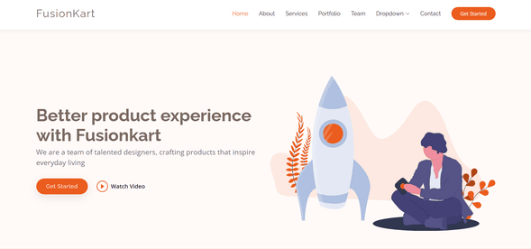
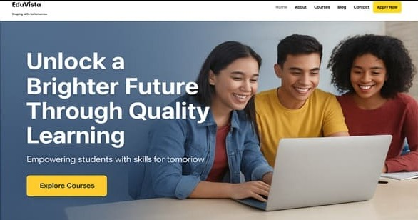
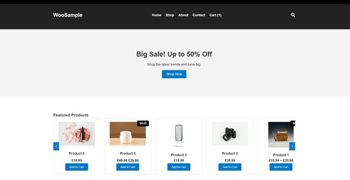
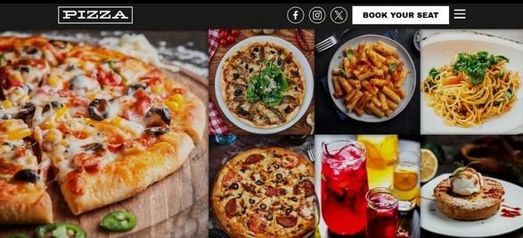

Aayushi Ghosh.
I develop things for the web.
01. About Me
Hi, I'm Aayushi Ghosh, a passionate web developer, and my journey into web development began with a curiosity for turning static designs into interactive websites—experimenting with HTML, CSS, and then customizing WordPress themes to see ideas come to life in real time.
Today, I have 1.3 years of professional experience building dynamic and user-friendly websites, delivering 25+ live projects ranging from corporate websites to CMS-driven platforms. My professional experience at Falk Technology Pvt. Ltd. focused on building custom WordPress themes, developing reusable theme components, transforming HTML designs into custom WordPress templates, creating dynamic content systems, and supporting eCommerce functionality.
I specialize in:
- Custom WordPress Theme Development
- WooCommerce customization & template overrides
- Dynamic content systems using ACF + CPT UI
- Elementor landing pages as personal development projects
- Plugin customization and custom plugin development
- Backend development using PHP + MySQL (CRUD applications)
- Website maintenance, optimization, backups, and debugging
02. Where I've Worked
Junior Web Developer @ Falk Technology Pvt. Ltd.
November 2024 - February 2026
- Developed 25+ dynamic single-page and multi-page websites, delivering responsive and user-friendly digital solutions.
- Built custom themes and reusable templates using WordPress, converting static HTML designs into dynamic CMS-driven websites.
- Created dynamic content systems using ACF and CPT UI, enabling easy content management for clients.
- Supported WooCommerce development, plugin integrations, bug fixing, website maintenance, backups, and performance optimization.
03. Education
Bachelor of Technology (B.Tech)
Brainware University | 2020 - 2024 | 9.73 CGPA
Built a strong foundation in computer science with focus on programming, data structures, database management, and problem-solving through academic projects and practical development.
Class 12 -ISC
AUTHPUR NATIONAL MODEL H.S SCHOOL | 2018 - 2020 | 76%
Studied science with emphasis on analytical thinking, mathematics, and logical reasoning, which strengthened my interest in technology and software development.
Class 10 -ICSE
ST. AUGUSTINE'S DAY SCHOOL | 2005 - 2018 | 81.4%
Developed core academic fundamentals, discipline, and curiosity for technology, laying the foundation for my future journey in computer science.
04. Some Things I've Developed

Featured Project
FusionKart
- WordPress
- Twenty Twenty-One theme
- ACF Pro
- Contact Form 7
Featured Project
FusionKart
Developed a fully customized informational CMS website using WordPress, featuring dynamic navigation, custom content management, service sections, FAQ modules, and integrated contact forms. Built a highly responsive custom UI on the Twenty Twenty-One theme with custom template files, successfully converting a static HTML, CSS, and JavaScript design into a dynamic and scalable WordPress solution.
- WordPress
- Twenty Twenty-One theme
- ACF Pro
- Contact Form 7

Featured Project
EduVista
- WordPress
- Hello Elementor theme
- Elementor
- CSS
Featured Project
EduVista
Developed EduVista, a fully customized multi-page educational website built with WordPress and Elementor. Created responsive and engaging page layouts with dynamic content sections, intuitive navigation, course highlights, service modules, and integrated contact forms, ensuring a seamless user experience across all devices.
- WordPress
- Hello Elementor theme
- Elementor
- CSS

Featured Project
WooSample
- WordPress
- Twenty Twenty-One theme
- WooCommerce
Featured Project
WooSample
Developed WooSample, a fully customized e-commerce website built with WordPress and WooCommerce. Implemented dynamic product listings, detailed product pages, category-based sidebar navigation, integrated product search, custom template overrides, cart and checkout functionality, and multiple plugin integrations to create a seamless and responsive shopping experience.
- WordPress
- Twenty Twenty-One theme
- WooCommerce

Featured Project
CustomAura
- WordPress
- Custom Theme
- ACF Pro
Featured Project
CustomAura
Developed CustomAura, a fully customized single-page WordPress website using a custom theme and custom template files. Integrated essential plugins, implemented dynamic content management with ACF to create an engaging and user-friendly online presence.
- WordPress
- Custom Theme
- ACF Pro
05. Latest Articles
Transforming Static Designs with WordPress
Building a WordPress website starts with transforming static HTML designs into reusable theme components.
Read Article
Customizing WooCommerce Beyond Default Templates
Creating a seamless e-commerce experience often requires going beyond WooCommerce's default layouts.
Read Article
Building Flexible Websites with Elementor and WordPress
Creating modern business websites with Elementor allows rapid development without compromising design quality.
Read Article
Crafting Custom WordPress Themes from Static Designs
Custom theme development transforms static HTML, CSS, and JavaScript designs into fully dynamic WordPress experiences.
Read Article
Building My First WordPress Plugin from Scratch
Developing a custom plugin provides a deeper understanding of WordPress architecture beyond theme development.
Read Article
06. What's Next?
Get In Touch
I'm currently looking for any new opportunities to utilize my skills. Whether you have a question, a project idea, or just want to say hi, my inbox is always open. I'll try my best to get back to you!
Say Hello